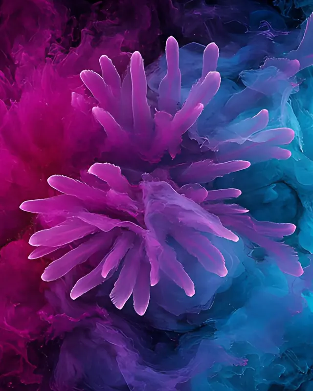

Every dish, filmed like a still life
Shot lists that frame hands, steam and the final plate the same way every time.
What you get
One place for the chef, the dish, the shot list and the post. Each card is a feature; the large one is the one to lead with.

Shot lists that frame hands, steam and the final plate the same way every time.
From recipe to posted episode.
Type, colour and tone locked across every episode.
Retention per scene, fed back into the next shot list.
A character bible keeps your chef consistent shot to shot.
Famous recipes are credited on screen before they post.